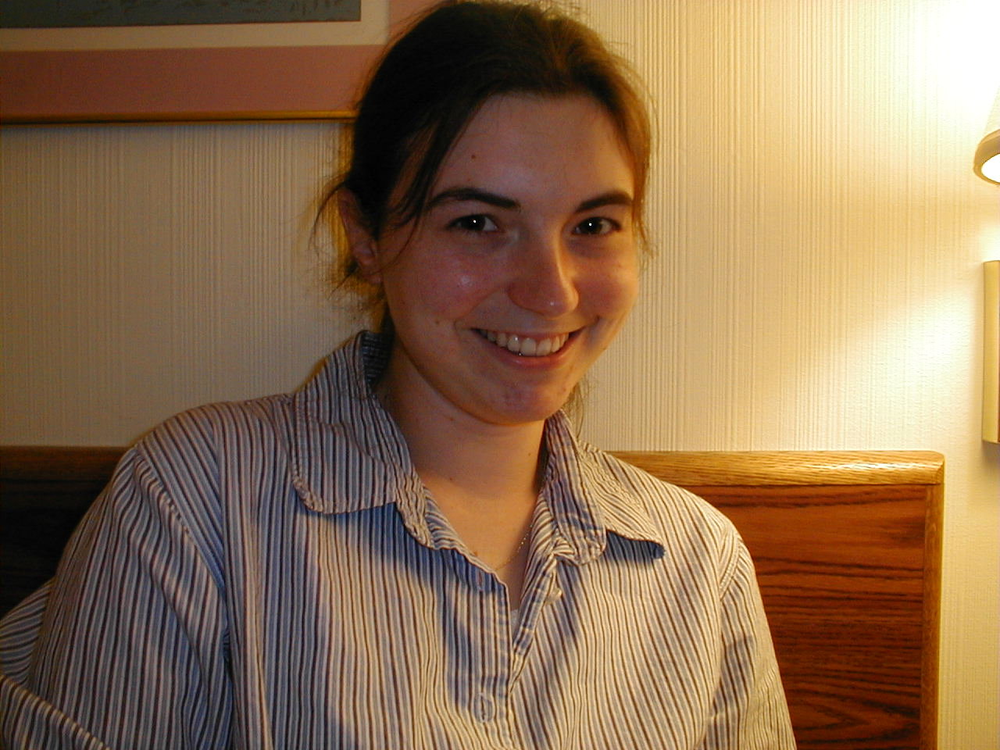
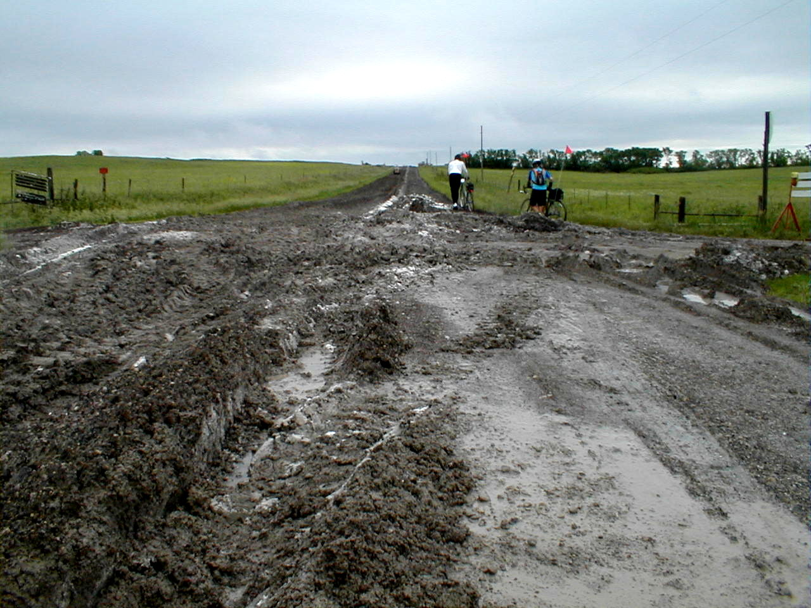

Day 25: June 6, Abilene, KS to Topeka, KSPrevious Day - Home - Next Day Photo of the DayMy own personal support crew, Holly, who graced me with a visit today! Construction Dirt + Heavy Rain = Mud Keegan's LogDay 25: June 6, Abilene, KS to Topeka, KS Mileage: 107.3 milesWeather: Overcast in the morning, sunny in the afternoon, light headwinds Vertical Climb: 2300 feet Riding Time: 7:45 A thunderstorm rolled into Abilene around 2:00 this morning, the rain pounding on the thin rough was very loud, but not loud enough to wake me from my deep sleep. The storm caused flash flooding all over northeast Kansas, creeks and rivers were all well over their banks. By the time we got up at 5:30 the rain had stopped, and though the skies were threatening for most of the morning, the rain only briefly returned. We've been really lucky with rain recently, every night we get a big thunderstorm and every day it stays dry. We left this morning and quickly found ourselves in the rolling hills, passing the occasional grazing cattle and sheep. The roads are very nice, little traffic but not much shoulder to ride on. Everything went smoothly until we came to a road closed sign, and as the detour was 6 miles along a muddy dirt road, we opted to ride out the closed road. It was only about 2 miles, but for much of it we were either riding in wet muck or walking our bikes in the grass. Everyone had to stop to clean out their brakes, bikes and riders alike were caked with mud. The first sag was at a diner in White City. While we were waiting it started to rain briefly, only enough to wet the surface of the roads, then the rain stopped and the sun came out for the first time in days. The overcast cleared quickly, by the end of the day the skies had only a few puffy white clouds. We left the sag under the newfound sun after an effort to clean some of the mud from our bikes. We did have a bit of a headwind today, light winds in the morning increasing to around 10 mph by noon, but in the late afternoon the wind was barely strong enough to keep the flags on the west side of their poles. I got a flat tire in Dwight, we stopped to change it just as Pat was coming by, so he helped change the tire. The route took us through the flint hills, some of the hilliest terrain in Kansas. We would have long climbs up a ridge and then descend into a river valley, repeating this for much of the day. The climbs look much like the terrain in parts of Arizona and New Mexico, but the surrounding hills are strikingly greener, contrasting nicely with the bright blue skies. This was one of the most picturesque days we've had so far, a nice change from the flatlands of southwestern Kansas. The second rest stop was in Eskridge, we only stopped briefly at the sag and opted instead for the Eskridge Café. The place had a lot of local character, the food wasn't quite top notch but it was satisfying after 76 miles of riding. Not long after Eskridge as I was riding along, a bee somehow became trapped in the finger of my glove. This sudden turn of events obviously upset the bee, to my sudden surprise it stung my finger. Luckily it didn't do a very good job as it left behind no stinger and the welt was gone within an hour. At 91 miles we stopped in Dover for a slice of pie. The pack ahead of us had eaten most of the favorites, but I settled on a Coconut Pie which proved to be enough to carry me for the last 15 miles. The last stretch dragged on, we passed the century mark as we neared Topeka. We finally arrived at the hotel just before 5:30, I had just enough time for a quick shower before route rap. I waited for Holly, who came just after 6:00 to join our group for dinner, then we headed over to the Timberline Grill across the street. Afterward dad took Holly's car to a laundromat, Holly and I did some shopping in the nearby stores. It was nearly 10:00 by the time I had to say goodbye to Holly, now it's off to bed to get some sleep before tomorrow's ride. Phil's LogFirst, I should note that with today's ride, we are halfway across the country. and I should add that I'm celebrating by sitting n a laundromat on the corner of 6th and Taylor. Holly, who works not far for the summer is visiting Keegan, so I borrowed her car to do our laundry. It's hot in here! Today was a stunningly beautiful day. It started ominously the night before. The weather forecast was for rain, at least into the morning. About 2:30 last night, the sound of rain pounding on the paper roof awakened me, and rain continues to pas in drives and drizzles for a few hours. With morning skies were dark and nasty looking to the east, clouds low and racing. We pedaled our way back through Abilene and turned east into our 104 mile ride, into a mild headwind. We had lots of shelter with trees, but al was wet with the recent rain and the temps were just above 60. Those that tell you that Kansas is flat are incorrect. (Thank you brother-in-law Scott, as a surveyor you knew better and you were correct!) Kansas has been an imperceptibly slow transition from wide open, treeless prairie and those smelly fattening yards to gentle rolling hills and farms as we all think of them. That is what we found just eat of Abilene, simple, clean all-American farms raising cows and horses and wheat and cute baby goats. There was a young girl, perhaps 8 years old, on a front porch close to the road watching our broken up group pass by in ones and twos. She looked curious and wistful, like a young Dorothy looking at the end of the rainbow. I asked, "Would you like to go to Boston with us? She responded sweetly but knowingly, "I don't think so." But who knows, maybe we planted a seed of wonderment like those two men on the bicycle years ago. Nevertheless, the countryside continued t dry from the past night's soaking rains. Streams will full of rushing brown runoff. As we got farther into the areas that saw the heaviest storms, farm fields were still draining into the roadside culverts, backyards were filled with water. It was fun to see all the water flow away, all of the lowland grasses bent with the flow. Ten Keegan yelled "flat" and Pat, the New Zealander was only feet away. We stood at the behest of a resident in a sopping front yard changing the tube, and learning something of the local politics. His son and girlfriend appeared. It was just nice. The terrain continued to grow hilly, preparing us for Missouri, I guess. We rolled through several small towns, stopped in one for lunch. Known for killer grilled cheese sandwiches, one was, but they were out of their Texas toast. I had a tenderloin (still mad at a cow trucked driver that blaaasted us menacingly), Keegan a ham and cheese. Simple America, again. I had a bee on my helmet while riding, and Keegan got one inside one of his open gloved fingers that stung him lightly. The land rolled on. We were tired at 104 miles but satisfied. It was another perfect day. And the clouds were beautiful. |
{kind=link}
{kind=link}